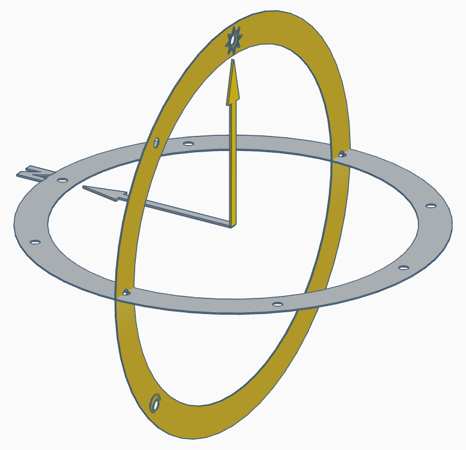
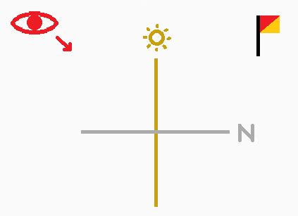

Someone at the mosque gave me this strange device, saying it would help me on my travels. The arrows seem to magically move on their own! They said to orient the device facing north and then read the arrows, but I don't understand what the rings represent. Maybe I'll find out during my journey.

- In this city, I admired a palace with three golden domes. From this angle, it looked just like it does on the currency. (The modern version, of course—not the older bill that only features one golden dome.) Then I turned to the right to enjoy the faint glow of the sun.
4
2
- In this city, I took a metro with a logo featuring three diamonds. I stepped out of an eight-letter subway station and was surprised to find myself in shade, since it was still daytime. I looked up and realized I was in the shadow of the tallest skyscraper on the continent.
2
5
- I attended a ceremony that takes place at a particular time of day, which this major city holds every year to celebrate National Indigenous Peoples Day (which is the exact, official title of the holiday, by the way). While gathered around the fire, I learned that you can replace one of the o’s in the city’s name with “ka” to get the Mohawk word that the city is named after.
1
5
- In this city, I visited an iconic, colorful 16th-century cathedral in a square named after a color. I thought everything would be closed by the time I got there, but strangely I found people preparing for a midnight service. That’s when I remembered that tomorrow is January 7th, the day this church celebrates Christmas.
8
1
- It took me less than two miles by car to pass through this city, which is nestled inside a much larger city. It was a fitting time of day to visit, given the name of the “strip” I was driving on. I admired the colorful billboards and the nightclubs that were just getting started.
9
3
7
- I attended a reading of some Spanish-language poetry written by a poet who was born in this city. The presenter read from one collection that could have been abbreviated as μg and another that seemed to be intended for avian audiences. I especially liked the title poem of the latter; given the lighting outside, it was easy to envision the scene of his mother with a guitar.
4
7
- I went wildlife spotting near this major city. The numbats and dugites were nowhere to be seen, but the quokkas were out in full force.
3
6
- I admired a monument resembling a particular animal’s body parts—an allusion to the goods that were traded when this city was a major Swahili port. Then I decided to drive back to the airport, which is named after a former president. Annoyingly, the sun was in my eyes the whole time.
6
10
8
Now I think I understand. The person that gave me the device was a...

ⓘ Regrettably, this puzzle contains some ambiguity regarding compass directions. When you run into said ambiguity, please highlight the following clue for guidance: ordinal, cardinal, ordinal, cardinal, ordinal, ordinal, ordinal, cardinal
ⓘ This puzzle was set in May 2025.